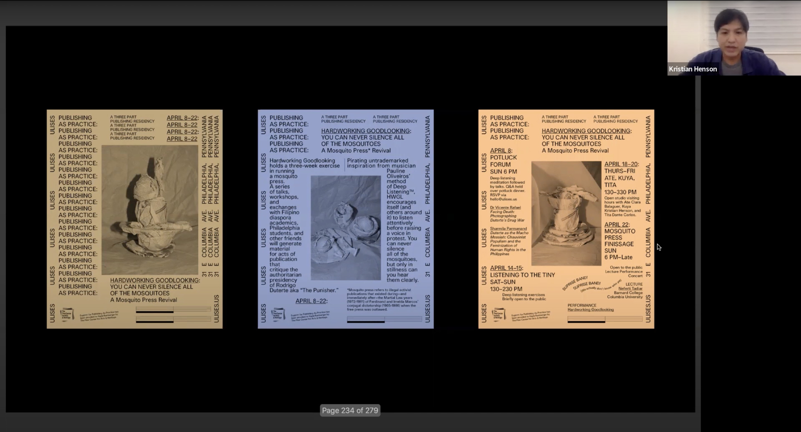
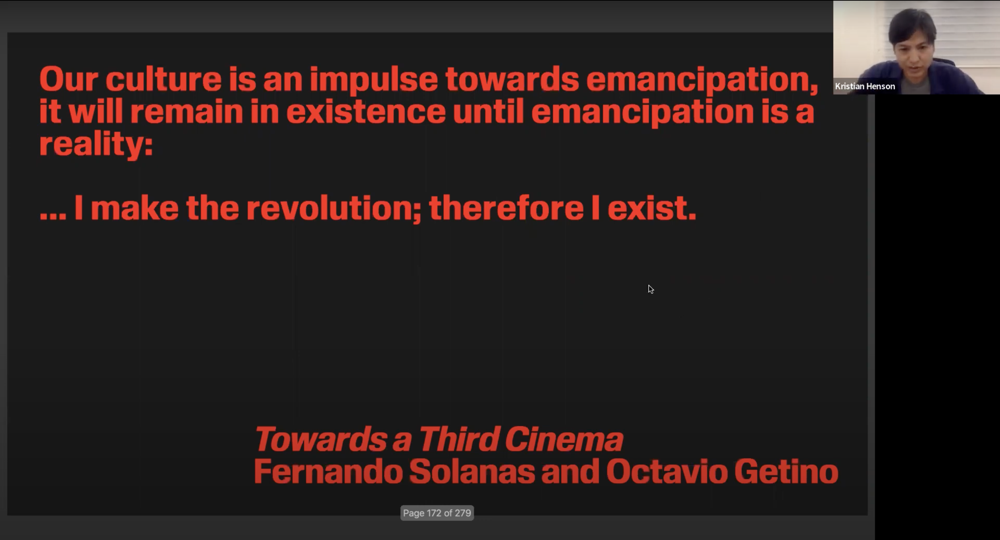

<p>Kristian Henson CD Lecture
    <br>
	Kristian Henson is a designer, director, and publisher who has worked for la based brands and music labels. Most of Kristian Henson’s work focuses on artists and institutions, and revolves around the subjects of social practice artmaking, culture, and more. Not only does Henson talk about the history of his design and how it flows between different spaces, he also talks about identity and how this is a very important idea for him. Henson also goes through the processes of his decision making within his projects for various brands, as well as discusses the changing of the structure with how designers provide for the consumer. Henson also relates with social practice in art, and talks about colonization and how it affects him and the relation of it within design. Additionally, Henson talks about Filipino cultural and traditional values and ideas as it relates to his own ethnicity, as well as the western history and how it has affected him and his work in terms of exile and oppression.
</p>

